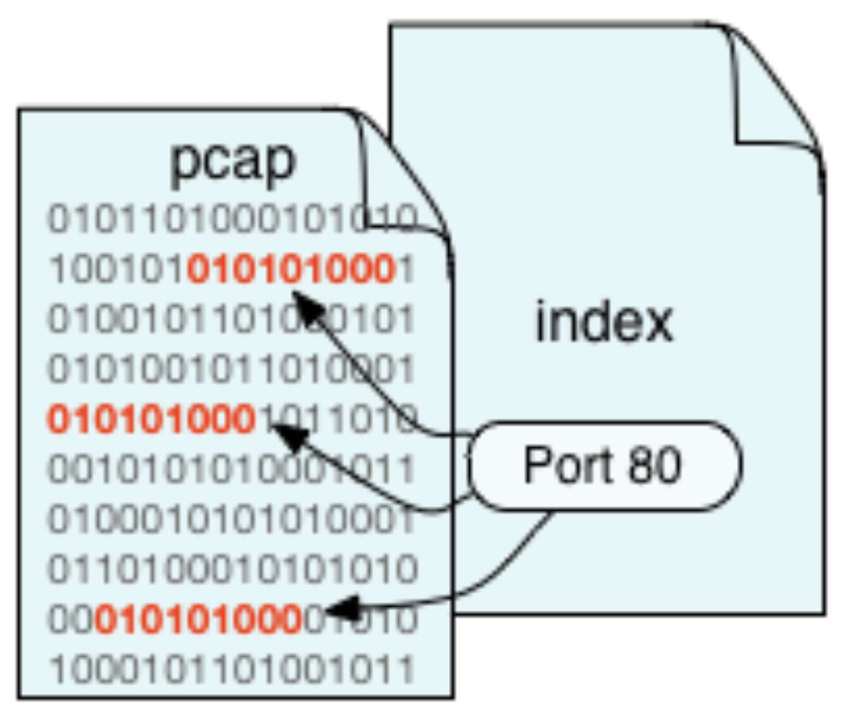

Основные характеристики
Некоторые из функций n2disk включают в себя:
Полностью настраивается пользователем.
Использование стандартного формата файла PCAP (обычного и наносекундного).
Возможность сжимать PCAP на лету для создания файлов .npcap.
Высокопроизводительная пакетная запись на диск.
BPF поддерживает фильтры (с использованием того же формата, что и в популярном инструменте tcpdump) для фильтрации нежелательных сетевых пакетов из процесса записи.
Поддержка оптимизированных фильтров типа BPF, более быстрой замены фильтров BPF (поддерживается подмножество синтаксиса BPF).
Поддержка многоядерности. n2disk был разработан с учетом многоядерных архитектур. Он использует как минимум два потока (один для захвата пакетов и один для записи на диск), и можно дополнительно распараллелить обработку трафика, используя несколько потоков. Связь между потоками была тщательно оптимизирована.
PF_RING ускорение. n2disk использует ускорение захвата пакетов, предлагаемое стандартом PF_RING и PF_RING ZC.
Доступ к диску Direct-IO. n2disk использует доступ Direct IO к дискам, чтобы получить максимальную пропускную способность записи на диск.
Индексация в реальном времени. n2disk способен создавать индекс на лету. Индекс можно запросить с использованием синтаксиса, подобного BPF, для быстрого получения интересных пакетов за указанный интервал времени.
Формат дампа
Файлы захвата сохраняются в стандартном формате PCAP с временными метками с микросекундным разрешением. Формат PCAP с наносекундным разрешением также возможен при использовании поддержки PF_RING и сетевых карт с аппаратной меткой времени.
Файлы захвата хранятся в последовательном порядке с ограничением длительности или размера для каждого файла. Также можно указать максимальное количество файлов: при достижении лимита n2disk перерабатывает уже записанные файлы, начиная с самого старого.
Фильтры захвата
n2disk использует тот же синтаксис для фильтров захвата, что и tcpdump и любая другая программа, использующая библиотеку libpcap. Фактически доступны два типа фильтров захвата:
Стандартные фильтры BPF.
Фильтры, подобные BPF (подмножество синтаксиса BPF), более быстрая замена BPF. Пожалуйста, проверьте раздел «Фильтрация пакетов» для получения информации о синтаксисе.
Индексные и пост-захватные фильтры
n2disk создает индекс «на лету» во время захвата пакета. Индекс находится в отдельном файле, связанном с файлом захвата, и содержит всю информацию о потоках и смещениях пакетов. Как только файл дампа готов, с помощью утилит, поставляемых с n2disk, можно запросить индекс для конкретных пакетов за определенный интервал времени, используя синтаксис, подобный BPF. Пакеты, соответствующие фильтру, возвращаются в формате PCAP.


Хронология
Помимо индекса для каждого файла дампа, n2disk также может создавать временную шкалу, способ хранения всего захваченного трафика в хронологическом порядке. Используя утилиты, поставляемые с n2disk, можно запросить временную шкалу для конкретных пакетов, принадлежащих всему набору дампов в заданный интервал времени.